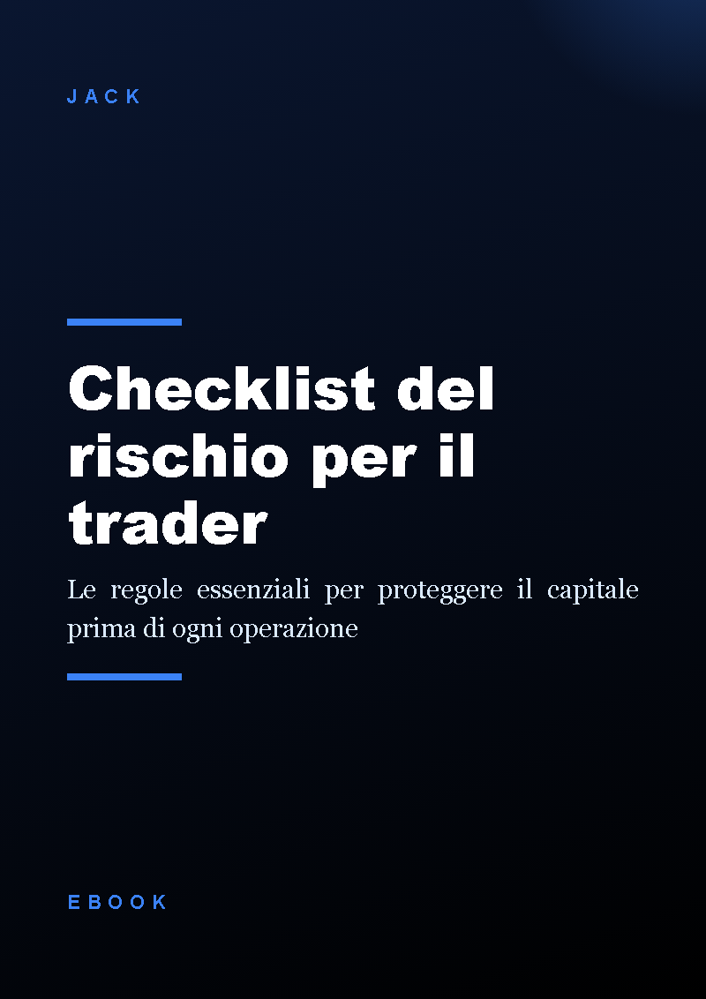
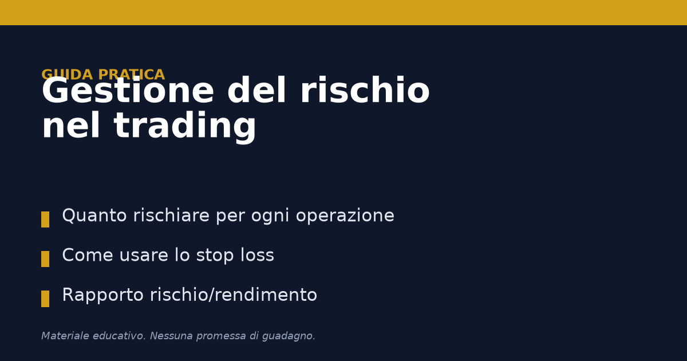
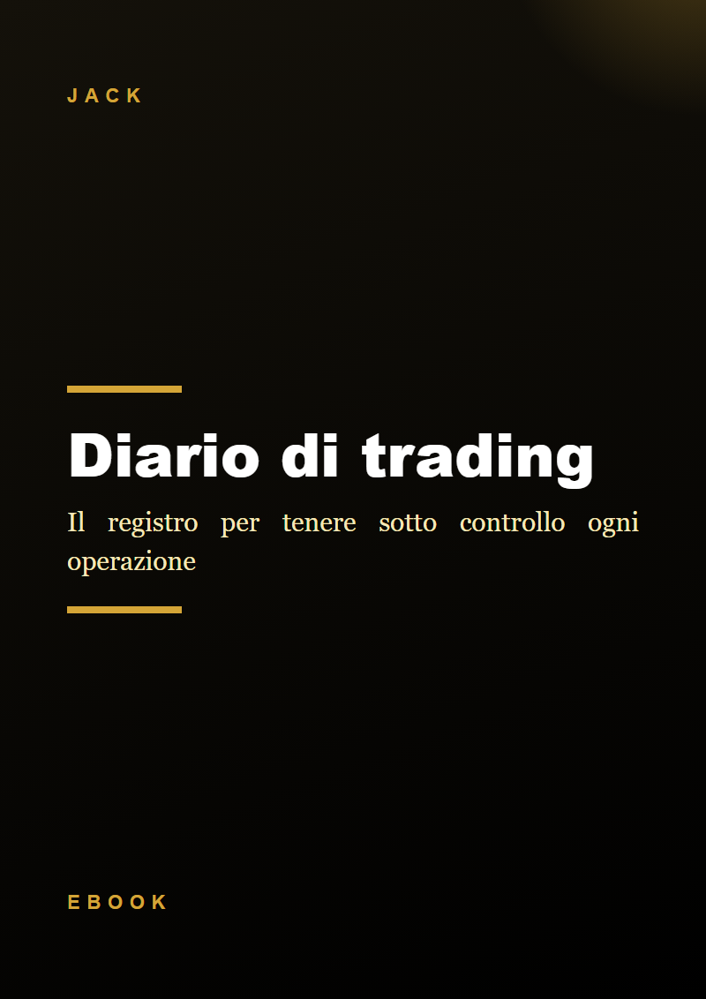

Checklist del rischio per il trader
Checklist gratuita: regola dell'1% per operazione, stop loss, limiti giornalieri e rapporto rischio/rendimento. Gratis, in cambio della tua email.
GratisAcquista ora
Checklist gratuita, guide e diario per decidere quanto rischiare prima di ogni operazione
Scopri i prodottiMateriali semplici e prudenti sulla gestione del rischio nel trading. Nessuna promessa di guadagno: solo regole e strumenti per non perdere più di quanto si è deciso.

Checklist gratuita: regola dell'1% per operazione, stop loss, limiti giornalieri e rapporto rischio/rendimento. Gratis, in cambio della tua email.

Guida pratica e stampabile per decidere quanto rischiare prima di ogni operazione.

Diario per registrare ogni operazione, il motivo dell'ingresso, il rischio scelto e il risultato. PDF, 5 capitoli, download immediato.
No, nessuno strumento garantisce profitti. Servono a gestire meglio il rischio e a tenere traccia di quello che fai.
Clicca sul pulsante gratuito, lascia la tua email e ricevi il PDF subito.